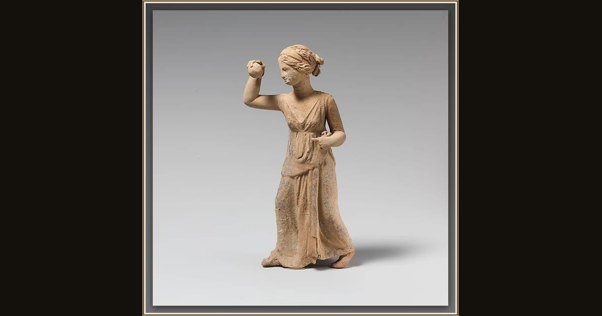

Terracotta statuette of a girl playing ball
Unknown · 3rd century BCE · The Metropolitan Museum of Art · New York, USA
A girl leans back mid-throw, a ball cupped in her raised hand, in this lively little clay figurine. She could be Nausicaa herself: with the palace laundry washed and drying on the shore, she and her maids toss a ball together — and their sudden shout wakes the